-MyFirstWork-
店舗の魅力を引き出すアナログデザイン：地域密着型スイーツ店での挑戦
担当：商品企画・デザイン・印刷物制作（個人制作）
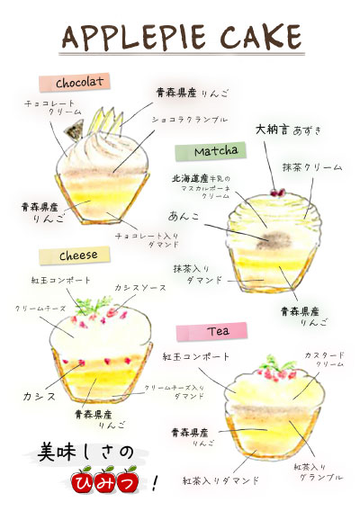副店長として勤務していた地域密着型スイーツ店にて、手書きで作成されていた販促物を刷新し、店舗全体のビジュアル統一と新商品の魅力を伝えるデザインを担当しました。主な目的は、商品魅力の可視化・店舗ブランディングの強化・再来店促進の3点です。
実際の販売写真です。※現在は販売されていません
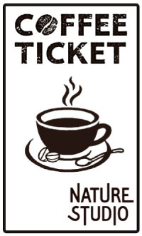商品企画からPOP・チラシ・チケット制作までを担当し、店舗の温かい雰囲気を活かした「遊び心」あるデザインを心がけました。特に、アップルパイのPOPではそれぞれの味を可愛らしく手描きで表現し、直感的に魅力が伝わるビジュアルに仕上げました。
デザイン導入後は「可愛い！」「美味しそう！」というお客様の声が増え、アップルパイはお昼には完売する日もあるほど人気商品に成長しました。この経験を通じて、デザインが人の心を動かし、行動に繋げる力を持つことを実感しました。限られたスペースで魅力を伝えるPOPデザインの経験は、今後のUI/UXにも活かせる大切なスキルとなっています。
-groupwork-
tsuzuru — 手紙を書くための鉛筆
担当：コピーライター（グループ制作）
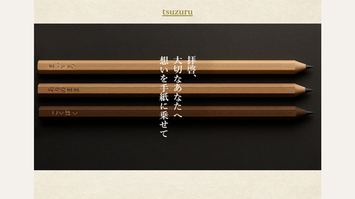「鉛筆を高く売る」というテーマのもと、手紙文化に寄り添う感情的価値を持った商品ブランディングを行いました。私はコピーライターとして、サイト全体の言語設計を担当。
- ネーミング・キャッチコピー作成（例：「tsuzuru」「拝啓、大切なあなたへ 想いを手紙に乗せて」）
- 3種の鉛筆に対応したストーリーテキスト執筆
- 感情に訴えるライティングで購買意欲を刺激する構成を提案
制作チーム：株式会社めがね（職業訓練校チーム）
Fantajia 株式会社 — 小説・ゲーム紹介サイト
担当：HTML・CSSコーディング（グループ制作）
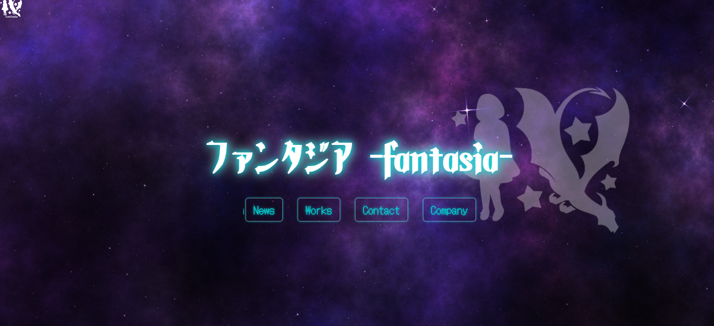職業訓練校でのグループワークとして、「Fantajia 株式会社」という架空企業の世界観をテーマにした小説・ゲーム紹介サイトを制作しました。ファンタジーやSF的な雰囲気をデザインと動きで表現し、作品の魅力を視覚的に伝えることを目的としました。
私は主にWebサイトのHTML/CSSコーディングを担当しました。制作メンバー全員がファンタジー制作未経験だったため、まずは徹底的な情報収集からスタートし、「架空の世界観」を共有するためのビジュアルイメージを整えるところから始めました。
クライアントからの要望であるドラゴンのロゴイメージや、テーマカラー（ターコイズ・オレンジ・紫）を活かしながら、ページ遷移アニメーションやボタンデザインに遊び心を込め、ユーザーが世界を探索するような没入感のあるUIを目指しました。
苦手だったコーディングにも挑戦し、チームの支えと協力によって、魅力的なファンタジーの世界観を表現するサイトを完成させることができました。未経験の分野でも情報収集とチーム連携を通じて乗り越えることができたこと、そして「遊び心」をUIに落とし込む具体的な方法を学べたことは、今後の制作活動において大きな糧となりました。
制作チーム：fantajia株式会社（職業訓練校チーム）
-my pets-
キャラクターデザインとイラストレーション：私らしさを表現する「遊び心」
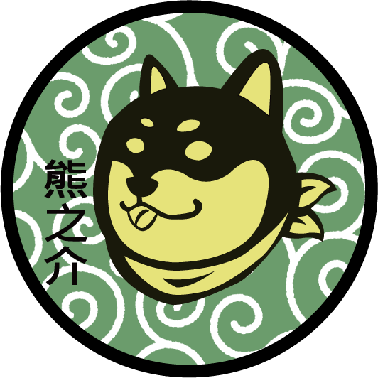愛犬 熊之介のシンボルマーク
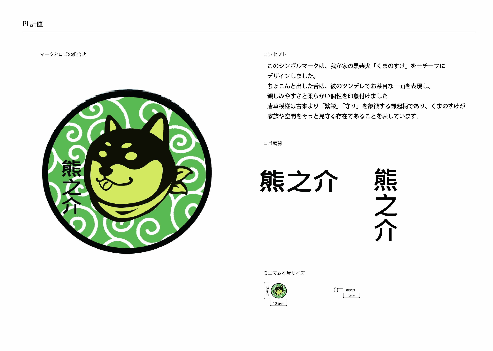 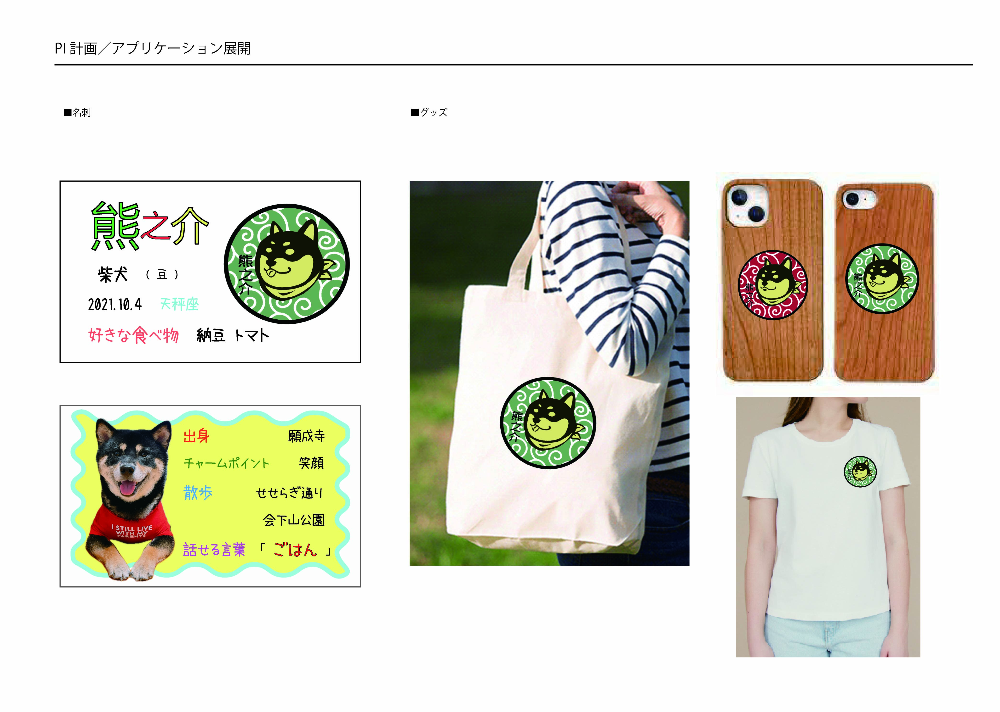「PI計画」ロゴ展開と展開例
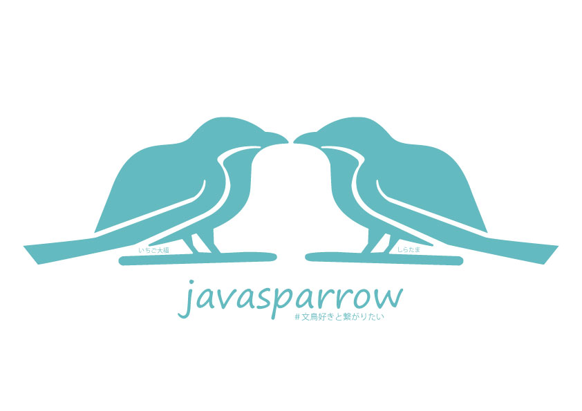文鳥 いちご大福（Instagramアイコンに使用）
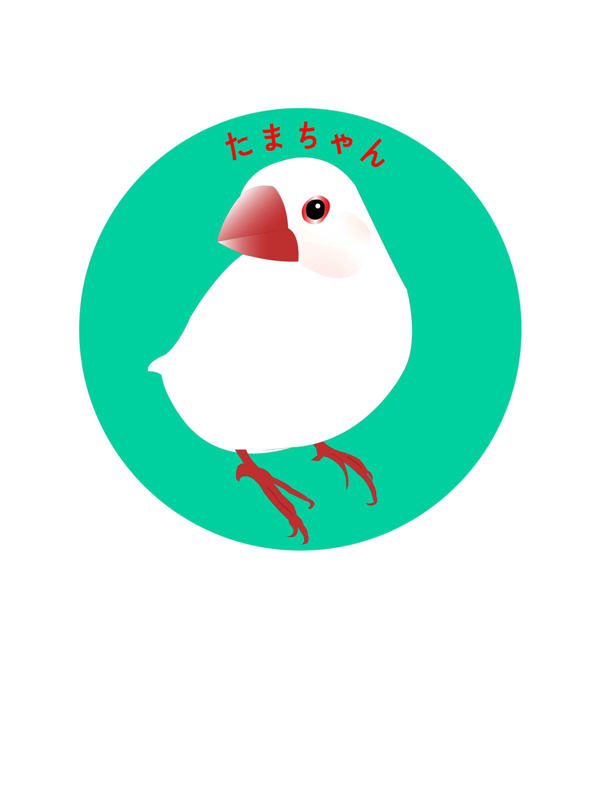白文鳥 しらたま
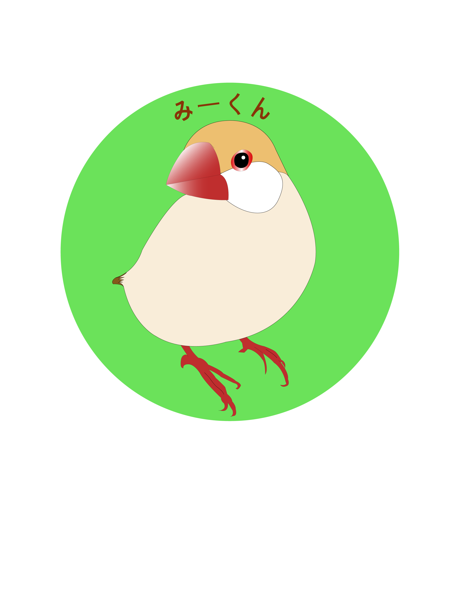シナモン文鳥 みたらし
コールダックLINEスタンプ
担当：イラスト・デザイン（個人制作）
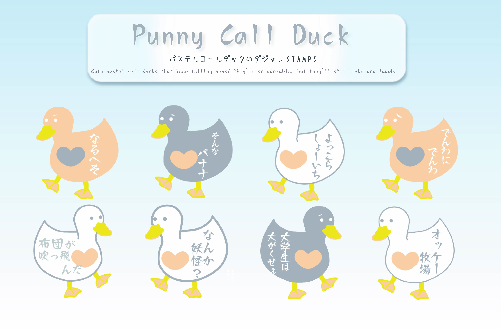「ダジャレ×かわいさ」をテーマに、Adobe Illustratorで制作したコールダックのLINEスタンプです。 愛らしい見た目と、ちょっぴりクスっと笑えるセリフのギャップで、日常の会話に「遊び心」と「癒やし」を届けることを目指しました。
スタンプ制作のきっかけは「ダジャレで笑ってもらいたい」という発想から。 手描きの温かみを活かしたキャラクターたちが、ユーザーの感情をやさしく代弁します。
-others-
架空商品「EARL MIST」ラベルデザイン
担当：ネーミング・ラベルデザイン（個人制作）
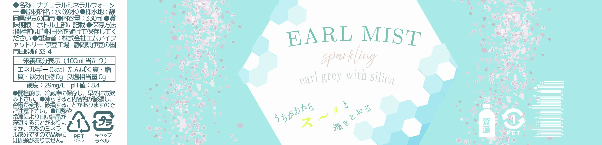 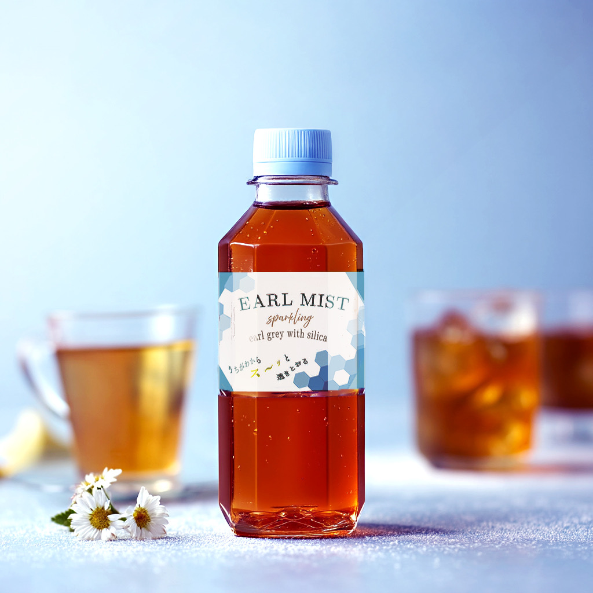架空のスパークリングティー「EARL MIST」の商品ラベルをデザインしました。 コンセプトは「うちがわからス〜ッと透きとおる」。 紅茶とシリカの透明感をイメージし、ミストブルーとヘキサゴンモチーフで構成。 フォント選びや配置にもこだわり、シンプルながら印象に残るパッケージを目指しました。
キャッチコピーには爽快感を伝える「ス〜ッと」をあえて大きく強調し、消費者の記憶に残るよう設計。 Mockupイメージと合わせてブランド全体の世界観を表現しました。
ポスターデザイン：KOBE 夏まつり（2025）
担当：デザイン・構成（個人制作）
架空イベント「KOBE 夏まつり」の告知用ポスターをCanvaで制作しました。 メインコピーは「＼楽しい遊びがいっぱい！／」。子どもたちがわくわくするような夏祭りの雰囲気を、ポップで明るいビジュアルで表現しています。
会場での屋台には、ジュース・かき氷・フランクフルト・フライドポテト・千本引き・人形すくいなど、 子どもが楽しめる内容をたっぷり盛り込み、親子で来たくなるような楽しいイメージを大切にしました。
- Canvaによる構成・配色設計
- 親子向けに配慮したアイコン・フォント・全体レイアウト
- イベント内容が一目で伝わる視認性の高いデザイン
イラストトレース練習
Illustratorの基本操作に慣れるため、知っているキャラクターの線画トレースに挑戦しました。細かい線の太さやカーブ一つで、印象が大きく変わることを体感できた作品です。
完成したときには、思わず声が出るほど嬉しく、自信にもつながりました。パスの扱い方や線の抑揚の大切さを学んだ、記憶に残る練習です。
ホタテフェア チラシ制作
PhotoshopとIllustratorを併用し、「北海道のほたてフェア」のプロモーション用チラシを制作しました。海や北海道の広がりを意識した爽やかな色味で、新鮮なホタテの魅力を引き出すデザインに。
比較的高い年齢層のお客様も想定し、可愛くなりすぎないようバランスに配慮しつつ、情報が多くなりすぎないように整理して設計しました。
見る人に「おいしそう」「行ってみたい」と思ってもらえるよう、色・フォント・構図すべてに意味を持たせた一枚です。